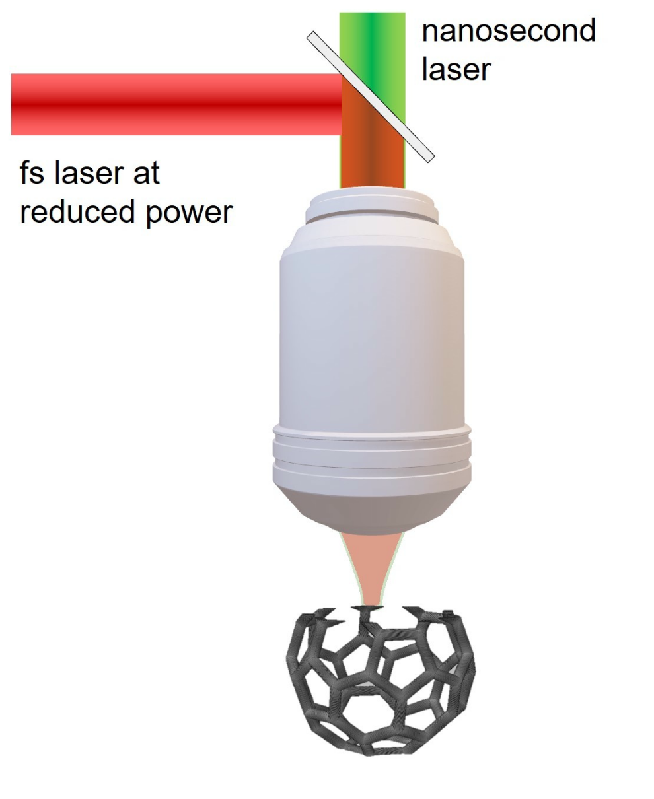
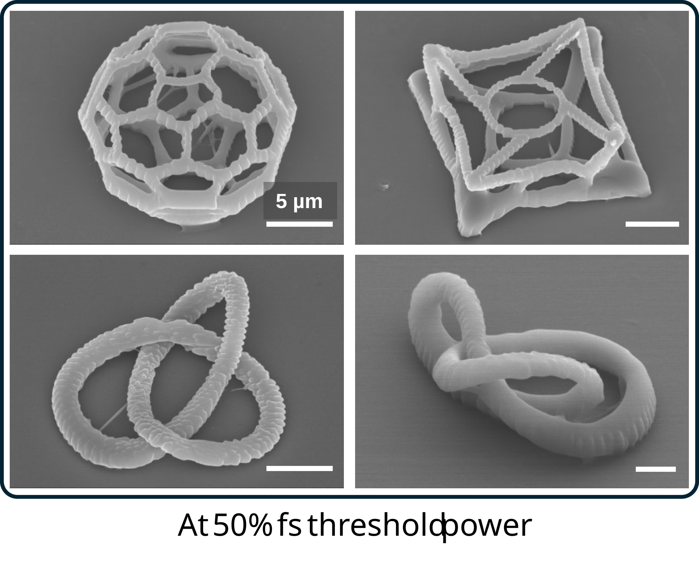
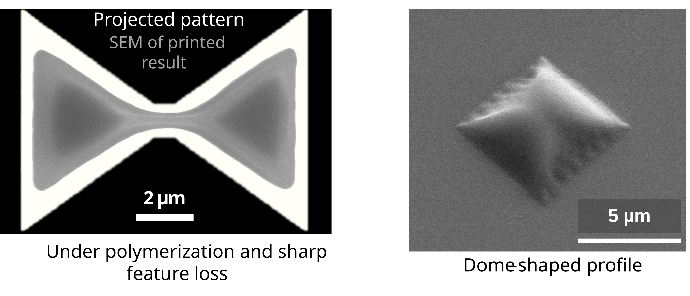

Research Projects
Dual-Laser 3D Printing for Efficient Nanofabrication
The Problem
Two-photon polymerization (2PP) achieves sub-micron 3D resolution via nonlinear two-photon absorption — but it requires expensive, high-power femtosecond lasers. The fs laser must first deplete inhibitor molecules (oxygen) in the photoresist before polymerization can begin, demanding high peak power. This cost barrier limits lab access and complicates scale-up.
My Contribution
- Invented the two-color concept: a 532 nm ns laser pre-depletes inhibitors via single-photon absorption, letting the fs source drive only polymerization at far lower power
- Designed and built the full dual-laser optical platform
- Developed a rate-equation photochemical model in MATLAB to explain the mechanism and guide process optimization
- Led the Optics Express publication; presented at SPIE Photonics West 2024
Optical Platform
- 532 nm ns laser co-axially combined with 800 nm Ti:Sapphire fs oscillator via dichroic beam combiner
- Custom negative-dispersion mirror pulse compressor for fs pulse width control
- EOM for sub-millisecond power modulation; piezo tip/tilt mirror for beam steering at the print plane
- Apochromatic high-NA oil-immersion objective for co-focal overlap of both beams
- Five-axis stage for precise 3D sample positioning


Printing Process — Step by Step
ns Laser Pre-Depletion
The 532 nm ns laser illuminates the focal volume, depleting oxygen inhibitors via single-photon absorption. Power is tuned so only inhibitors are consumed — no single-photon polymerization occurs.
fs Laser Two-Photon Polymerization
With inhibitors consumed, the 800 nm fs laser drives two-photon polymerization at the voxel at ~50% lower power (3D) or ~80% (2D). Resolution is fully preserved since polymerization is still driven by the nonlinear fs process.
Photochemical Modeling & Validation
A rate-equation model captures coupled single- and two-photon kinetics, inhibitor depletion, and radical generation. Validated against printed voxel sizes and power-threshold measurements across multiple conditions.
Complex Structure Fabrication
Woodpile photonic crystals, a buckyball, a chiral structure, and a trefoil knot were all printed at reduced fs power — demonstrating the technique generalizes to arbitrary 3D geometries.

Geometric Accuracy in Projection Multiphoton Lithography
The Problem
Projection multiphoton lithography (PMPL) replaces slow voxel-by-voxel scanning with full-layer DMD projection, dramatically increasing throughput. But printed structures systematically deviate from the intended patterns — rounded edges, undersized features, non-uniform layers. ML-based correction methods exist for 2D, but none capture the underlying 3D physics or generalize across geometries and resins.
My Contribution
- Developed a 3D numerical framework coupling Fourier optics propagation with reaction-diffusion photochemical kinetics in MATLAB
- Identified three dominant distortion sources by analyzing temporal evolution of reaction species and diffusion effects
- Validated simulations of elementary geometries against SEM measurements — mean absolute error <150 nm
- Designed and experimentally validated physics-guided compensation strategies
- Led writing of the Advanced Optical Materials publication

Optical Platform
- 800 nm, 5 kHz Ti:Sapphire regenerative amplifier incident on a DMD acting as both diffraction grating and optical mask
- Dispersed beam collected by a lens and relayed to the back focal plane of a 100× objective
- 4f configuration recombines spectral components at the print plane, achieving spatiotemporal focusing in liquid photoresist

Modeling & Compensation Pipeline
Optical Field Propagation
Fourier optics model captures wavelength-dependent DMD diffraction, the collecting and objective lens, and pupil function — producing the full spectral and temporal intensity distribution for any DMD pattern at the print plane.
Reaction-Diffusion Simulation
Photochemical PDEs — tracking photoinitiator consumption, oxygen diffusion, inhibitor depletion, and radical generation — are solved numerically (FTCS method, MATLAB), taking the optical intensity distribution as input.
Distortion Identification
Three sources isolated: (1) local oxygen inhibition shrinking feature edges; (2) lateral oxygen diffusion from unilluminated regions causing asymmetric under-polymerization; (3) DMD pixel diffraction producing intensity ripples that locally modulate cure depth.
Compensation & Validation
Compensation combines a pre-exposure step to locally deplete oxygen with asymmetric DMD pattern modifications to correct diffraction-induced distortions. Validated in simulation and experiment — mean absolute error below 150 nm.